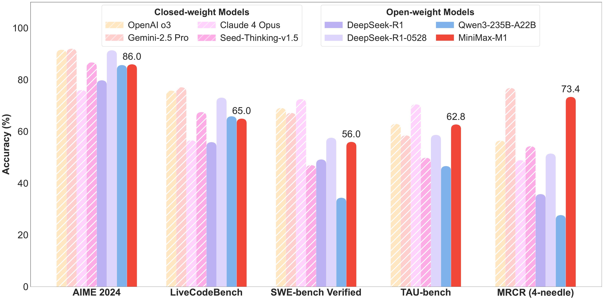
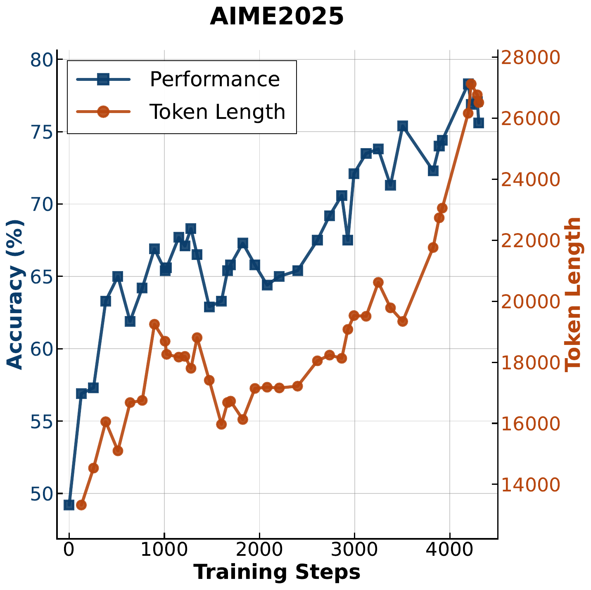

Problem & Background
大语言推理模型（LRM）如 o1、DeepSeek-R1 通过大规模 RL 扩展测试时计算取得了显著成功，但传统 Transformer 的 softmax attention 存在二次复杂度瓶颈，限制了长推理链的高效扩展。
长推理链的 FLOPs 成本过高。100K tokens 时，DeepSeek R1 的 FLOPs 是 M1 的 4 倍。
现有开源 LRM 的上下文窗口太小（通常 32K-128K），无法处理超长任务。
扩展 RL 训练时的计算成本和稳定性问题，token 级裁剪会丢弃关键低概率 tokens。

核心洞察：M1 验证了 Lightning Attention + CISPO 可显著降低推理和 RL 训练成本。
Core Method
基于 MiniMax-Text-01，每 7 个 Lightning Attention 的 TransNormer blocks 后接 1 个 softmax attention 的 Transformer block。100K tokens 时仅需 DeepSeek R1 25% 的 FLOPs。
Clipped IS-weight Policy Optimization — 裁剪的是重要性采样权重而非 token 更新，所有 tokens 保留梯度贡献。相比 DAPO 达到相同性能只需 50% 训练步数。
问题1: LM head 激活值过大 → FP32 LM output head
问题2: 梯度跨度大（1e-18~1e-5） → β1=0.9, β2=0.95, eps=1e-15
问题3: 重复生成 → 3000 连续 token 概率 >0.99 时早停
RL 数据课程设计:
· 数学推理：~50K 竞赛级题目（pass@10 在 0-0.9 之间）
· 逻辑推理：41 种任务，~53K 样本（SynLogic 框架）
· 编程：30K 竞赛题目
· 软件工程：SWE-bench 沙盒执行环境
· 通用领域：25K 复杂样本（GenRM reward model）
长思维扩展 (40K → 80K):
窗口逐步扩展：40K → 48K → 56K → 64K → 72K → 80K
负样本比正样本增长更快导致梯度不平衡 → 早停 + token 级归一化 + 降低梯度裁剪阈值
Key Results
| Benchmark | M1-80K | DS-R1 | Qwen3 |
|---|---|---|---|
| AIME 2024 | 86.0 | 91.4 | 85.7 |
| SWE-bench Verified | 56.0 | 57.6 | 34.4 |
| OpenAI-MRCR (1M) | 56.2 | — | — |
| TAU-bench (airline) | 62.0 | 53.5 | 34.7 |

长上下文：远超所有开源模型，甚至超过 o3 和 Claude 4 Opus
工具使用：TAU-bench 超越 Gemini 2.5 Pro
软件工程：仅次于 DeepSeek-R1-0528
效率优势：
· 100K tokens 生成：仅需 DeepSeek R1 25% 的 FLOPs
· RL 训练成本：$0.53M（512 H800 GPU，3 周）
· CISPO 相比 DAPO：50% 训练步数达到相同性能